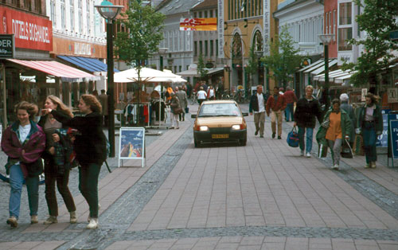
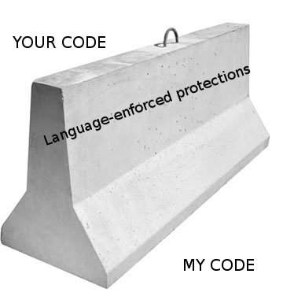

Woonerf and Python
At TOPP there’s a lot of traffic discussion, since a substantial portion of the organization is dedicated to Livable Streets initiatives. One of the traffic ideas people have gotten excited about is Woonerf. This is a Dutch traffic planning idea. In areas where there’s the intersection of lots of kinds of traffic (car, pedestrian, bike, destinations and through traffic) you have to deal with the contention for the streets. Traditionally this is approached as a complicated system of rules and right-of-ways. There’s spaces for each mode of transportation, lights to say which is allowed to go when (with lots of red and green arrows), crosswalk islands, concrete barriers, and so on.
A problem with this is that a person can only pay attention to so many things at a time. As the number of traffic controls increases, the controls themselves dominate your attention. It’s based on the ideal that so long as everyone pays attention tothe controls, they don’t have to pay attention to each other. Of course, if there’s a circumstance the controls don’t take into account then people will deviate (for instance, crossing somewhere other than the crosswalk, or getting in the wrong lane for a turn, or the simple existance of a bike is usually unaccounted for). If all attention is on the controls, and everyone trusts that the controls are being obeyed, these deviations can lead to accidents. This can create a negative feedback cycle where the controls become increasingly complex to try to take into account every possibility, with the addition of things like Jersey barriers to exclude deviant traffic. At least in the U.S., and especially in the suburbs or in complex intersections, this feeling of an overcontrolled and restricted traffic plan is common.

So: Woonerf. This is an extreme reaction to traffic controls. An intersection designed with the principles of Woonerf eschews all controls. This includes even things like curbs and signage. It removes most cues about behavior, and specifically of the concept of "right of way". Every person entering the intersection must view it as a negotiation. The use of eye contact, body language, and hand signals determines who takes the right of way. In this way all kinds of traffic are peers, regardless of destination or mode of transport. Also each person must focus on where they are right now, and not where they will be a minute from now; they must stay engaged.

So, I was reading a critique of Python where someone was saying how they missed public/private/protected distinctions on attributes and methods. And it occurred to me: Python’s object model is like Woonerf.
Python does not enforce rules about what you must and must not do. There are cues, like leading underscores, the __magic_method__ naming pattern, or at the module level there’s __all__. But there are no curbs, you won’t even feel the slightest bump when you access a "private" attribute on an instance.
This can lead to conflicts. For example, during discussions on installation, some people will argue for creating requirements like "SomeLibrary>=1.0,<2.0", with the expectation that while version 2.0 doesn’t exist, so long as you install something in the 1.x line it will maintain compatibility with your application. This is an unrealistic expectation. Do you and the library maintainer have the same idea about what compatibility means? What if you depend on something the maintainer considers a bug?
Practically, you can’t be sure that future versions of a library will work. You also can’t be sure they won’t work; there’s nothing that requires the maintainer of the library to break your application with version 2.0. This is where it becomes a negotiation. If you decide to cross without a crosswalk (use a non-public API) then okay. You just have to keep an eye out. And library authors, whether they like it or not, need to consider the API-as-it-is-used as much as the API-they-have-defined. In open source in particular, there are a lot of ways to achieve this communication. We don’t use some third party (e.g., a QA team or language features) to enforce rules on both sides (there are no traffic controls), instead the communication is more flat, and speaks as much to intentions as mechanisms. When someone asks "how do I do X?" a common response is: "what are you trying to accomplish?" Often an answer to the second question makes the first question irrelevant.
Woonerf is great for small towns, for creating a humane space. Is it right for big cities and streets, for busy people who want to get places fast, for trucking and industry? I’m not sure, but probably not. This is where a multi-paradigm approach is necessary. Over time libraries have to harden, become more static, innovation should happen on top of them and not in the library. Some times we create third party controls through interfaces (of one kind or another). I suppose in this case there is a kind of negotiation about how we negotiate — there’s no one process for how to build negotiation-free foundations in Python. But it’s best not to harden things you aren’t sure are right, and I’m pretty sure there’s no "right" at this very-human level of abstraction.